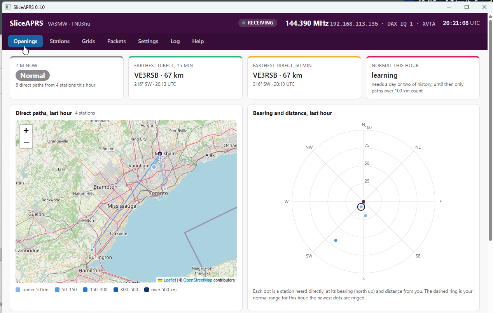
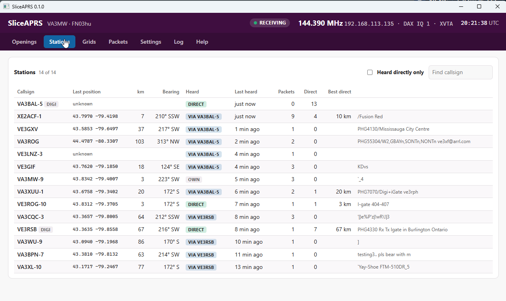

What it does
APRS stations beacon their positions all the time, so they make a dense network of 2 m beacons. When the band opens for tropo or another enhancement, you start to hear stations directly from much farther away than usual. SliceAPRS watches for that.
No audio cables
Opens its own panadapter and DAX IQ stream at 144.390 MHz (144.800 in Europe), so your slices stay free.
Built-in decoder
Decodes 1200 baud APRS itself: positions, compressed, Mic-E, objects, items, status, weather and messages. No TNC or sound card.
Who you really heard
A packet relayed by a local digipeater counts as the digipeater, not the far station that sent it.
Your normal range
Learns how far you usually hear, hour by hour, over the last 14 days.
Openings
Flags Enhanced and Open conditions with direction, strength, start and end, and keeps a log.
Alerts
A banner on screen, and if you want, a spoken alert and a Pushover message to your phone when 2 m opens.
Mobiles
An optional map layer shows cars and other mobiles heard in the last hour, even through digipeaters, with their trails. Just for looking: they do not count for openings.
Grid squares
Keeps every 4-character grid square heard directly, on a grid map and in a table.
Desktop or headless
A Windows desktop app, or a headless program for a Raspberry Pi that you set up from any web browser.
Watch from anywhere
The same screens are served as a web page, so you can check from a phone or another PC.
Openings: a screen to leave up

A far station is one heard directly in the last 30 minutes beyond your normal range times the sensitivity factor (and at least 40 km beyond it at medium), and not one of your usual stations (heard directly on 3 or more days).
| Status | Means (medium sensitivity) |
|---|---|
| Normal | Nothing beyond your normal range |
| Enhanced | At least 1 far station |
| Open | 3 or more far stations, or any direct path over the set distance (300 km to start) |
Sensitivity changes the factor and the counts: low is 1.5× normal and needs 2 far stations for Enhanced and 4 for Open; medium is 1.3×, 1 and 3; high is 1.15×, 1 and 2. Your normal range needs a day or two of listening. Until then only the distance rule works.
Alerts
The Openings tab shows a banner when the band opens. Under Settings → Alerts you can also have SliceAPRS speak the alert on the computer it runs on, and send it to your phone with Pushover. Choose whether to be alerted at Enhanced or only at Open.
- Spoken alerts use the Windows voice, or espeak-ng on Linux (
sudo apt install espeak-ng). For example: “Two metres is open toward the south west. Farthest station W 2 T R 2, at 340 kilometres.” - Pushover needs a Pushover account and the app on your phone. Enter your user key from your Pushover dashboard, and an API token from an application you create at pushover.net/apps/build. The keys are kept in the settings file and never shown on the page again.
- Use Test voice and Test Pushover to check both.
- The same level is not alerted again within 30 minutes. Going from Enhanced to Open alerts again. Restarting SliceAPRS during an opening does not.

Who was heard directly
Each APRS packet carries its digipeater path, and each digipeater that repeats it marks it as repeated. The signal that reached your antenna came from the last digipeater that marked it, or from the sender if no digipeater has repeated it yet.
- A relayed packet is measured to the digipeater, never to the original sender. Digipeater positions are learned from their own beacons; until a digipeater beacons, its distance is unknown.
- Not counted: packets from the internet (third-party, TCPIP), satellite and ISS paths, packets repeated by a digipeater that did not add its call, and your own callsign.
- A position that jumps too far, too fast is held until a second report agrees.
How the screens show it
A station can be heard directly in two ways: when you hear its own packet before any digipeater has repeated it, and when it is a digipeater and you hear it relaying another station's packet. Either way, its signal reached your antenna.
| Where | What it shows | Example |
|---|---|---|
| Stations · Heard directly | Whether you have ever heard this station's own signal, and how often: its own packets and packets it relayed for others | yes · 5 own · 75 relays |
| Stations · Its last packet | How this station's most recent packet reached you: direct, through a digipeater, from the internet or by satellite | via VA3XUU-1 |
| Stations · Sent | All packets from this station, however they reached you | 42 |
| Packets · Signal heard from | The station whose signal you heard for this packet, and whether it was that station's own packet or a relay | VE3DIG-1 · relaying W2RLY |
So a station can show yes under Heard directly while its last packet came through a digipeater. Hearings stored before version 0.1.2 were not split, and show as earlier.
Download
From the latest release:
| File | For |
|---|---|
| sliceaprs-gui-windows-amd64.exe | Windows desktop app (most people want this one) |
| sliceaprs-linux-arm64 | Raspberry Pi OS 64-bit (Pi 3, 4, 5), headless |
| sliceaprs-linux-arm | Raspberry Pi OS 32-bit, headless |
| sliceaprs-linux-amd64 | Debian or Ubuntu on a PC, headless |
| sliceaprs-windows-amd64.exe | Windows, headless (web page only) |
| sliceaprs.example.yaml | A sample settings file |
Windows may warn that the program is from an unknown publisher, because it is not code-signed. Choose More info → Run anyway.
Getting started on Windows
- Set up the radio for your APRS frequency. On most supported radios that means a 2 m transverter in the radio's XVTR settings.
- Run
sliceaprs-gui-windows-amd64.exe. On first start it opens on Settings. - Enter your callsign and grid. Click Find radios and pick yours, or type its IP address.
- Check the frequency (144.390 MHz in North America, 144.800 MHz in Europe). Leave Receive antenna on the radio's choice to use the transverter port (XVTA), or pick one.
- Pick a DAX IQ channel that no other program uses. SliceAPRS checks before it starts and tells you if the channel is taken.
- Press Save and restart. Packets appear on the Packets tab as they are heard.
Settings are saved in C:\ProgramData\SliceAPRS\sliceaprs.yaml. Packets, paths, openings and the log go to C:\ProgramData\SliceAPRS\data. While the app runs, it also serves its screens at http://localhost:8081.
Running headless on a Raspberry Pi
Install the program, give your user the settings and data folders, and start it:
wget https://github.com/va3mw/SliceAPRS/releases/latest/download/sliceaprs-linux-arm64
sudo install sliceaprs-linux-arm64 /usr/local/bin/sliceaprs
sudo mkdir -p /etc/sliceaprs /var/lib/sliceaprs
sudo chown $USER /etc/sliceaprs /var/lib/sliceaprs
sliceaprsThen browse to http://<pi-name>:8081 from any computer and set it up there, just as on Windows. Settings go to /etc/sliceaprs/sliceaprs.yaml and history to /var/lib/sliceaprs. On 32-bit Raspberry Pi OS, use sliceaprs-linux-arm instead. No systemd service file is included yet.
The web page has no password. Keep port 8081 on your own network. Over the network, the page can change station, radio, frequency, antenna, opening and alert settings, but not the data folder or the web address.
Questions
Which radios does it work with?
Supported radios are those that can receive your local APRS frequency, usually through a 2 m transverter. It has been tested with a 2 m transverter on XVTA, firmware v4.4.0. SliceAPRS connects as a GUI client, so on radios with few client connections SmartSDR may not be able to connect at the same time.
Can it run next to FlexWSPR or SmartSDR?
Yes, as long as each uses its own DAX IQ channel. SliceAPRS uses channel 2 by default and refuses to start on a channel another program is using. If another program changes SliceAPRS's panadapter or slice while it runs (moves it off 2 m, or changes its antenna), SliceAPRS notices within 15 seconds and asks whether to restore it.
Is it an iGate or a digipeater?
No. SliceAPRS only listens. It never transmits and sends nothing to APRS-IS.
Why do far stations not count as an opening?
Most far stations reach you through a digipeater. SliceAPRS only counts the station whose signal actually reached your antenna, so a local digipeater relaying a far station is a local path.
What is sent over the internet?
Map tiles, fetched from OpenStreetMap when you look at the map and kept in the data folder for a week. Without internet the map is replaced by the plots. If you turn on Pushover alerts, each alert is also sent to Pushover. Nothing else.
Credits and license
- APRS: Bob Bruninga, WB4APR (SK), and the APRS protocol reference. AX.25: the ARRL/TAPR link-layer protocol.
- The demodulator follows the approach of Dire Wolf by John Langner, WB2OSZ. No Dire Wolf code is included.
- FlexRadio for the SmartSDR API and DAX IQ. FlexRadio, SmartSDR and DAX are trademarks of FlexRadio Systems; SliceAPRS is not a FlexRadio product. Radio code is shared with FlexWSPR.
- Written by Michael, VA3MW, and Claude (Anthropic).
- Wails (MIT), Leaflet (BSD-2) and go-yaml (MIT and Apache 2.0). Map data © OpenStreetMap contributors.
SliceAPRS is released under the MIT License. Copyright © 2026 Michael, VA3MW.